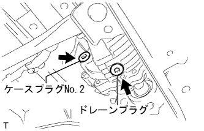
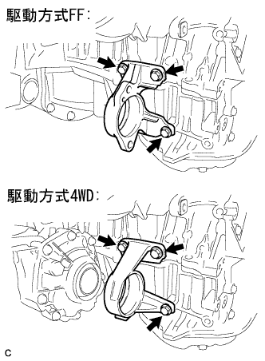
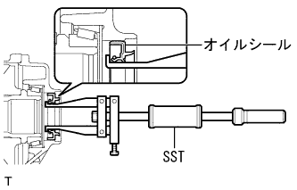

Transfer Case Oil Seal RH (4WD) Removal |
| 1. Remove Front Tire |
| 2. Remove Engine Under Cover NO.1 |
Remove the 6 bolts and 7 clips, and remove the engine under cover No.1.
| 3. Remove Engine Under Cover Rear RH |
| 4. Drain CVT Fluid |
Using a socket hexagon wrench 10, remove the drain plug and gasket, and drain the fluid.
Using a socket hexagon wrench 10, tighten the drain plug with a new gasket.
| 5. Drain Transfer Oil |
 |
Using straight hexagon 10mm and an offset wrench (10X12 long), remove transfer case plug No.2 (filler plug) and the gasket.
Using socket hexagon 10mm, remove the transfer drain plug and gasket, and drain the transfer oil.
Install the drain plug with a new gasket.
| 6. Remove Front Axle Shaft Nut RH |
)| 7. Disconnect Speed Sensor Front RH |
)| 8. Disconnect Tie Rod End Sub-assembly RH |
)| 9. Disconnect Front Suspension Arm Sub-assembly Lower NO.1 RH |
)| 10. Disconnect Front Stabilizer Link Assembly RH |
)| 11. Disconnect Front Axle Assembly RH |
)| 12. Remove Front Drive Shaft Assembly RH |
 |
Using a flat-tip screwdriver, compress the drive shaft bearing bracket hole snap ring and remove it from the bearing bracket.
Remove bearing bracket bolt No.1 and remove the front drive shaft assembly RH from the drive shaft bearing bracket.
| 13. Remove Drive Shaft Bearing Bracket |
 |
Remove the 3 bolts and the drive shaft bearing bracket.
| 14. Remove Transfer Case Oil Seal RH |
 |
Using SST, remove the oil seal from the transfer assembly.